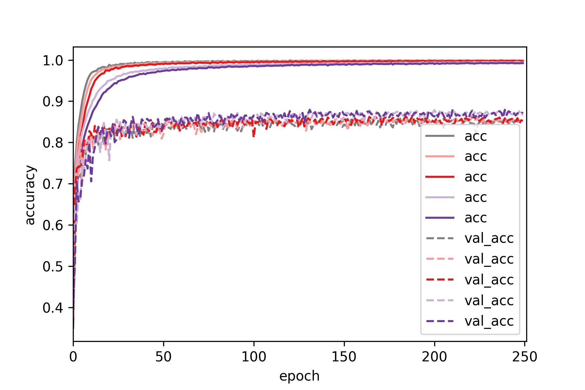

Convolutional Neural Networks (CNNs) are currently the state of the art method
when it comes to computer vision tasks. However, the datasets usually available
are not large enough so CNNs tend to overfit and not generalize as well to
new data. Dropout is the standard method of regularizing neural networks
(including CNNs) and has been used extensively over the years. For example in
VGG or VGG-like networks . Nevertheless, Dropout tends to increase the number
of epochs required until convergence.
As a result, lately there's an emerging trend (e.g. Inception v3 and Residual Networks)
to only apply Batch Normalization which also has a regularizing effect.
In the original Dropout paper it is demonstrated that it is beneficial to apply
Dropout to fully connected, as well as convolutional layers in a VGG-like network.
Nevertheless, in most cases where Dropout is used, it is usually applied
only in the last fully connected layer(s) in VGG, VGG-like networks
or other architectures like Xception.
In Inception v4 Dropout is applied only to the last average pooling layer, since there are no
fully connected layers. One exception to the above trend is Wide ResNets, where
it is demonstrated that applying dropout between convolutional layers in ResNets
is generally a good idea.
In this post we will demonstrate that using Dropout in conjunction with
Batch Normalization is beneficial even for simple VGG-like architectures.
We argue that even in cases where Batch Normalization can complement or possibly
be a subtitute for the the regularizing effect of Dropout, the additional
ensembling effect of Dropout still leads to gains in generalization performance.
However, this comes at the cost of additional epochs being required during training.
We will show that applying Dropout in convolutional layers can be tricky. To be
precise, if the dropout probability is too high, the overal performance of the
network deteriorates. But If the dropout probability in the convolutional layers
is small enough, there is an increase in performance. Moreover, we will study in
more detail the effect of dropout in convolutional layers of different depth in
in the network. Something that is hinted at, but not fully demonstrated in the
original Dropout paper.
The CIFAR 10 dataset consists of 60,000 images (50,000 training, 10,000 test set)
that belong to 10 distinct categories. Each image is 32x32x3. It's quite small
for today's standards but it is a nice dataset to play around with, since re-training
a different network on it is relatively fast (few hours). So it's perfect for experiments
if you are doing deep learning on a less-than-infinite budget. Next, we show
one image for each of the classes present in the dataset
Just a reminder: the purpose of this post is to explore the properties of Dropout
in CNNs, not to reach state of the art results in CIFAR10. In this post we will use
the CIFAR10 test set as a validation set (to save the model that performs best
on the validation set during training). So to be technically correct, accuracy on
the CIFAR 10 test set, is validation accuracy (and not test accuracy) in this case.
We will use keras to define our networks. We will use a VGG-like convolutional
network that consists of 6 convolutional and 2 fully connected layers. The convolutional
layers are separated into 3 blocks of 2 layers each. Convolutional layers in the
same block have the same number of features. We apply Dropout and max-poooling after every
convolutional block. We apply Batch Normalization before every ReLU activation.
Finally, we apply Dropout after every Fully Connected (Dense) layer. We will use
adam to train the network, with default parameters as set defined by Keras
(lr=0.002, beta_1=0.9, beta_2=0.999, epsilon=1e-08, decay=0.0). We will train
each network for 250 epochs and save the model with the best performance on the
validation set.
Please note that a dropout layer with dropout probability = 0, is just an
identity layer. This allows us to re-use the same code to define networks that
do or do not have dropout at different points, just by changing the argument
of the dropout layer. Overall, the network has approximately 2M parameters
nfilters = [64,128,256]
ndense = 512
add_BatchNorm = True
dropout_rate_conv = [0.0, 0.0, 0.0]#1 value for each conv block
dropout_rate_dense = 0.0
model_id='CNN_bn_'+str(add_BatchNorm)+'_dropConv_'+str(dropout_rate_conv[0])+'_'+\
str(dropout_rate_conv[1])+'_'+str(dropout_rate_conv[2])+'_'+'dropDense_'+str(dropout_rate_dense)
print('Build model...',model_id)
model = Sequential()
#Conv block #1
model.add(Conv2D(nfilters[0], (3, 3), padding='same',
input_shape=X_tr.shape[1:]))
if(add_BatchNorm==True):
model.add(BatchNormalization(axis=-1))
model.add(Activation('relu'))
model.add(Dropout(dropout_rate_conv[0]))
model.add(Conv2D(nfilters[0], (3, 3)))
if(add_BatchNorm==True):
model.add(BatchNormalization(axis=-1))
model.add(Activation('relu'))
model.add(Dropout(dropout_rate_conv[0]))
model.add(MaxPooling2D(pool_size=(2, 2)))
#Conv block #2
model.add(Conv2D(nfilters[1], (3, 3), padding='same'))
if(add_BatchNorm==True):
model.add(BatchNormalization(axis=-1))
model.add(Activation('relu'))
model.add(Dropout(dropout_rate_conv[1]))
model.add(Conv2D(nfilters[1], (3, 3)))
if(add_BatchNorm==True):
model.add(BatchNormalization(axis=-1))
model.add(Activation('relu'))
model.add(Dropout(dropout_rate_conv[1]))
model.add(MaxPooling2D(pool_size=(2, 2)))
#Conv block #3
model.add(Conv2D(nfilters[2], (3, 3), padding='same'))
if(add_BatchNorm==True):
model.add(BatchNormalization(axis=-1))
model.add(Activation('relu'))
model.add(Dropout(dropout_rate_conv[2]))
model.add(Conv2D(nfilters[2], (3, 3)))
if(add_BatchNorm==True):
model.add(BatchNormalization(axis=-1))
model.add(Activation('relu'))
model.add(Dropout(dropout_rate_conv[2]))
model.add(MaxPooling2D(pool_size=(2, 2)))
#at this point each image has shape (None, 2, 2, nfilters[2])
model.add(Flatten())
#at this point each image has shape (None, 2*2*nfilters[2])
model.add(Dense(ndense))
if(add_BatchNorm==True):
model.add(BatchNormalization(axis=-1))
model.add(Activation('relu'))
model.add(Dropout(dropout_rate_dense))
model.add(Dense(ndense))
if(add_BatchNorm==True):
model.add(BatchNormalization(axis=-1))
model.add(Activation('relu'))
model.add(Dropout(dropout_rate_dense))
model.add(Dense(num_classes))
model.add(Activation('softmax'))
model.compile(loss='categorical_crossentropy',
optimizer='adam',
metrics=['accuracy'])For the remainder of this post we will consider 2 levels of Dropout, for simplicity:
Low Dropout: 0.2 probability to drop a unit.
High Dropout: 0.5 probability to drop a unit.
We will consider a batch normalized version of the network as the baseline for
all subsequent comparisons. Batch normalization leads to a considerable increase
in classification accuracy of the validation set, compared to ta vanilla version
of the network where no regularization is used.


We can see that training the vanilla network deteriorates after ~150 epochs,
perhaps since no decay was used with adam. On the other hand, there are no problems
when training the batch normalized version of the network.
We do not apply dropout after the fully connected (Dense) layers. In the
low dropout setting we setup the above network according to:
nfilters = [64,128,256]
ndense = 512
add_BatchNorm = True
dropout_rate_conv = [0.2, 0.2, 0.2]#low dropout of 0.2
dropout_rate_dense = 0.0As we can see below, applying batch normalization + low dropout increases classification
accuracy on the validation set, compared to the baseline (batch normalization, no dropout).
In the high dropout setting we setup the network according to
nfilters = [64,128,256]
ndense = 512
add_BatchNorm = True
dropout_rate_conv = [0.5, 0.5, 0.5]#high dropout of 0.5
dropout_rate_dense = 0.0If we increase the dropout probability to 0.5, the performance of the network
deteriorates.


Deterioration of network performance with high dropout in the convolutional layers
may be attributed to one of two possible causes (or both).
(1) High dropout of 0.5 leaves out half the network, so the CNN does not have enough
capacity to model the task at hand.
(2) High dropout hinders training of the CNN.
We demonstrate that (1) is not the case, by training a network where we
use batch normalization, no dropout but halve the number of filters at each convolutional
layer.
nfilters = [32,64,128] #half number of filters
ndense = 512
add_BatchNorm = True
dropout_rate_conv = [0.0, 0.0, 0.0]
dropout_rate_dense = 0.0The smaller network performs much better than the large network with 0.5
dropout, so model capacity is not a problem. Therefore, we conclude that
Using high dropout values in convolutional layers probably hinders training.


In general, increases Dropout in Fully Connected (Dense) layers is a good idea,
since units of fully connected layers are much more reduntant than units of
convolutional layers. However, larger values of Dropout tend to require a larger
number of epochs until convergence (but the execution time per epoch is pretty much
the same). Last, one should be aware of the extreme case where Dropout is too
high and the network is underfitting.
In the low dropout setting we setup the above network according to:
nfilters = [64,128,256]
ndense = 512
add_BatchNorm = True
dropout_rate_conv = [0.0, 0.0, 0.0]
dropout_rate_dense = 0.2#low dropout of 0.2In the high dropout setting we setup the network according to
nfilters = [64,128,256]
ndense = 512
add_BatchNorm = True
dropout_rate_conv = [0.0, 0.0, 0.0]
dropout_rate_dense = 0.5#high dropout of 0.5We can see than increases dropout in fully connected layers increases classification
accuracy on the test set, but the improvement is marginal compared to adding
dropout after the convolutional layers. One possible expanation for this
could be that in the above network, the dense layers correspond to ~0.8M parameters
out of the ~2M parameters of the network. So is the improvement marginal
because dense layers are responsible for a minority of the overall parameters
of the network? We will come to this later.


Now we combine what we learned above and apply dropout in both the convolutional
and fully connected parts of the network. We only use Dropout with probability 0.2
for the convolutional layers and we try out Dropout with probability 0.2 or 0.5
for both fully connected layers.
So the first network is:
nfilters = [64,128,256]
ndense = 512
add_BatchNorm = True
dropout_rate_conv = [0.2, 0.2, 0.2]
dropout_rate_dense = 0.2#low dropout of 0.2while the second network is:
nfilters = [64,128,256]
ndense = 512
add_BatchNorm = True
dropout_rate_conv = [0.2, 0.2, 0.2]
dropout_rate_dense = 0.5#high dropout of 0.5We can see that simply combining what performed best in our previous tests:
Dropout 0.2 in the convolutional and Dropout 0.5 in the fully connected parts,
led to the best result overall.


Previously we speculated whether the minimal increase in performance when applying
Dropout in the fully connected layers only can be attributed to the fact that
fully connected layers make up for ~0.8M of the ~2M parameters of the network.
Now we demonstrate that adding Dropout in convolutional layers is beneficial,
even if fully connected layers make up for the majority of model parameters.
To be precise, we upscale both fully connected layers from 512 to 1024 units each,
while leaving the convolutional part of the network the same. Now the fully connected
layers make up for ~2M of the ~3.2M parameters of the network. Next, we
evaluate 3 different versions of the network
No Dropout, only Batch Normalization:
nfilters = [64,128,256]
ndense = 1024
add_BatchNorm = True
dropout_rate_conv = [0.0, 0.0, 0.0]
dropout_rate_dense = 0.0Dropout in the fully connected layers only:
nfilters = [64,128,256]
ndense = 1024
add_BatchNorm = True
dropout_rate_conv = [0.0, 0.0, 0.0]
dropout_rate_dense = 0.5# later 0.75Dropout in the convolutional & fully connected layers:
nfilters = [64,128,256]
ndense = 1024
add_BatchNorm = True
dropout_rate_conv = [0.2, 0.2, 0.2]
dropout_rate_dense = 0.5# later 0.75Adding dropout to the fully connected layers marginally increased validation
accuracy, while also adding dropout in the convolutional layers had a more
pronounced positive effect. It is interesting however, that none of the new
configurations beat the previous best of 0.8831 validation accuracy.


Let's see what happens if we add low dropout of 0.2 and high dropout of 0.5
to only 1 of the 3 convolutional blocks.
Reminder: The network consists of 3 convolutional blocks, with each block
consisting of 2 convolutional layers, while each convolution is followed by
Batch Normalization and a ReLU activation function. After each convolutional
block, max pooling is performed.
Does the effect of Dropout depend on the depth of the convolutional block?
Yes! As we can see below, shallower convolutional blocks are more sensitive to
Dropout, so lower values are recommended. As we go deeper into the network,
higher values of Dropout can be used. For example, in the third convolutional block
there is an increase in performance even if we use high dropout (but low dropout
increases performance even more).

The source code of this project is freely available on github.
cs231n lecture on youtube, covering Dropout, Batch Normaliztion and Adam.
paper - Dropout: A Simple Way to Prevent Neural Networks from Overfitting
paper - Batch Normalization: Accelerating Deep Network Training by Reducing Internal Covariate Shift
paper - Very Deep Convolutional Networks for Large-Scale Image Recognition
paper - Delving Deep into Rectifiers: Surpassing Human-Level Performance on ImageNet Classification
paper - Rethinking the Inception Architecture for Computer Vision
paper - Inception-v4, Inception-ResNet and the Impact of Residual Connections on Learning
paper - Xception: Deep Learning with Depthwise Separable Convolutions